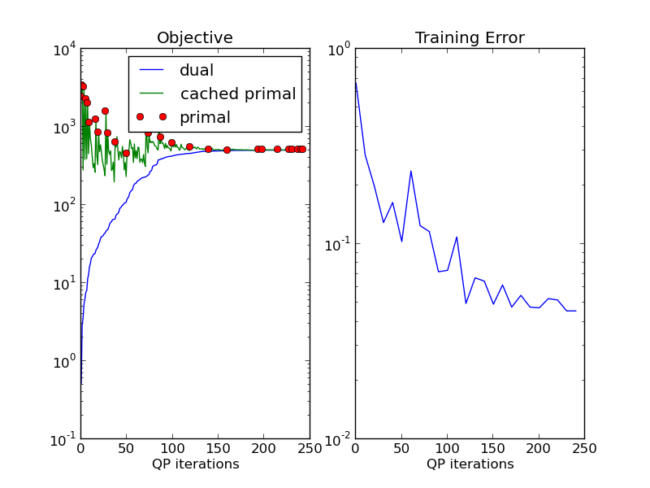

This example illustrates the role of approximate inference and caching in exact learning of a 1-slack SSVM.
Please see plot_objetive_curve.py for an interpretation of the curves.
We start learning by using an undergenerating inference method, QPBO-based alpha expansion. One the algorithm can not find a violated constraint any more, we switch to a less efficient but exact inference procedure, branch-and-bound based on AD3. The switch to AD3 can be seen in the graph after the (approximate) primal objective and the cutting plane lower bound touch. (zoom in)
After the switch to exact inference, the red circles show he true primal objective.
Script output:
Training 1-slack dual structural SVM
new constraint too weak.
new constraint too weak.
no additional constraints
Switching to ad3bb inference
new constraint too weak.
new constraint too weak.
no additional constraints
OneSlackSSVM(C=1, break_on_bad=False, cache_tol=auto, check_constraints=True,
inactive_threshold=1e-10, inactive_window=50, inference_cache=100,
logger=None, max_iter=1000,
model=DirectionalGridCRF(n_states: 3, inference_method: qpbo),
n_jobs=-1, positive_constraint=None, show_loss_every=10,
switch_to=ad3bb, tol=0.001, verbose=0)
Iterations: 243
Objective: 505.245003
Gap: 0.018169
Python source code: plot_exact_learning.py
import numpy as np
from pystruct.models import DirectionalGridCRF
import pystruct.learners as ssvm
import pystruct.toy_datasets as toy
from pystruct.plot_learning import plot_learning
X, Y = toy.generate_blocks_multinomial(noise=2, n_samples=20, seed=1)
n_labels = len(np.unique(Y))
crf = DirectionalGridCRF(n_states=n_labels, inference_method="qpbo",
neighborhood=4)
clf = ssvm.OneSlackSSVM(model=crf, max_iter=1000, C=1, verbose=0,
check_constraints=True, n_jobs=-1, inference_cache=100,
inactive_window=50, tol=.001, show_loss_every=10,
switch_to="ad3bb")
clf.fit(X, Y)
plot_learning(clf, time=False)
Total running time of the example: 22.17 seconds